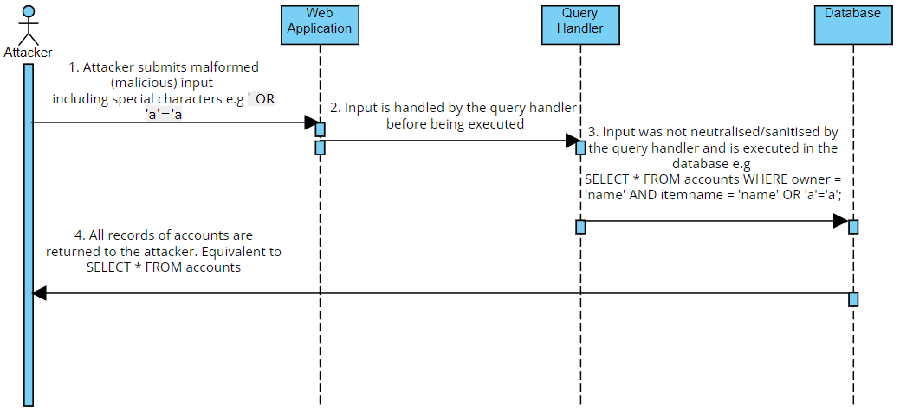

Unit 1 served as an introduction to secure software development by exploring different approaches to software development
, standards and introducing the UML language in supporting secure
software development. I considered to be this unit somewhat a revision
from the introductory module but with a focus on building on software
development.
The first collaborative activity concentrated on using a UML diagram in order to model a weakness of choice listed in the 2017 OWASP. I chose SQL injection and a sequence
diagram in order to show in detail the interaction between objects and
actors over time and offer to the reader a clear overview of how a
simple SQL injection functions.The diagram was created for this activity:
